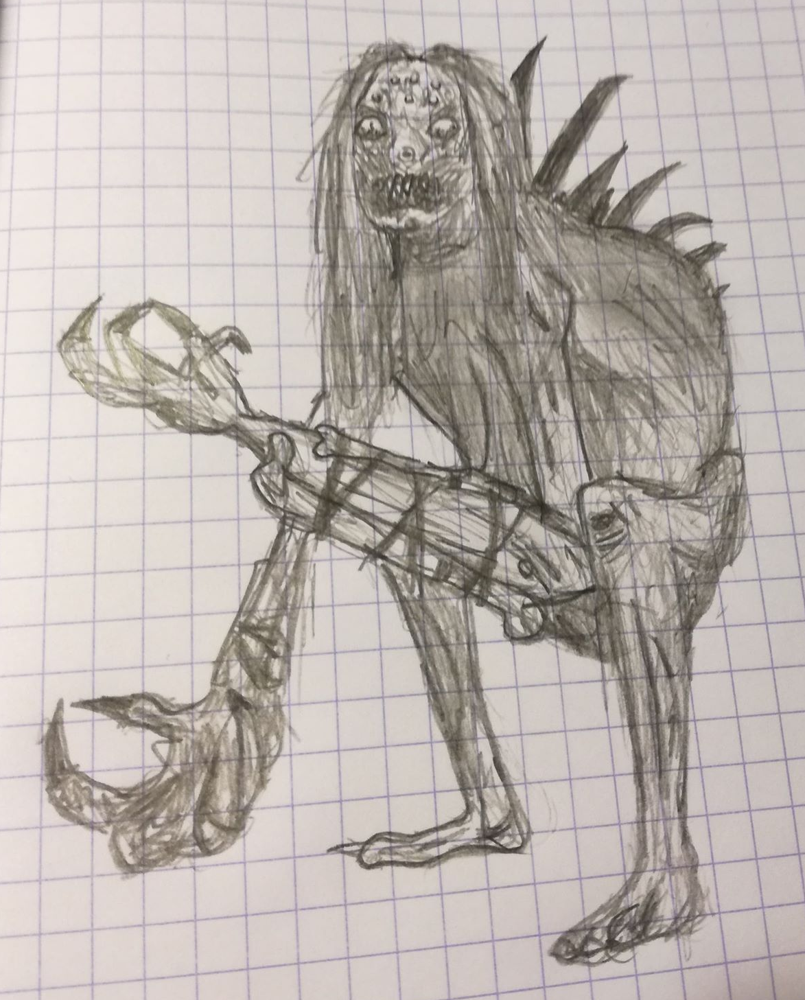
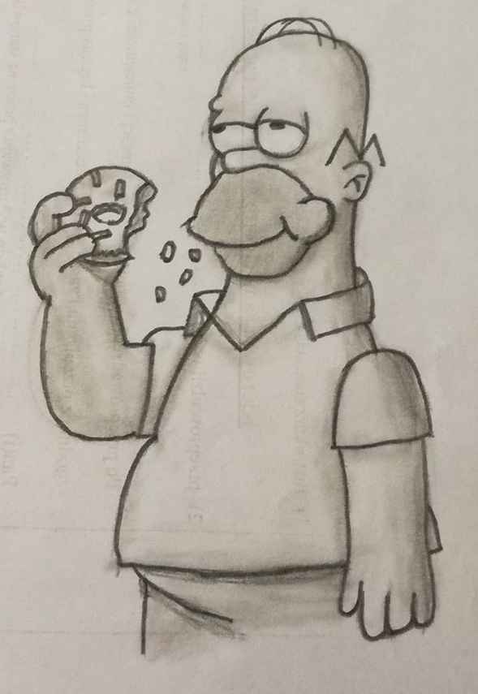
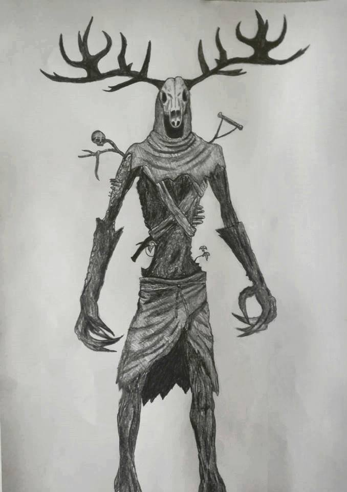
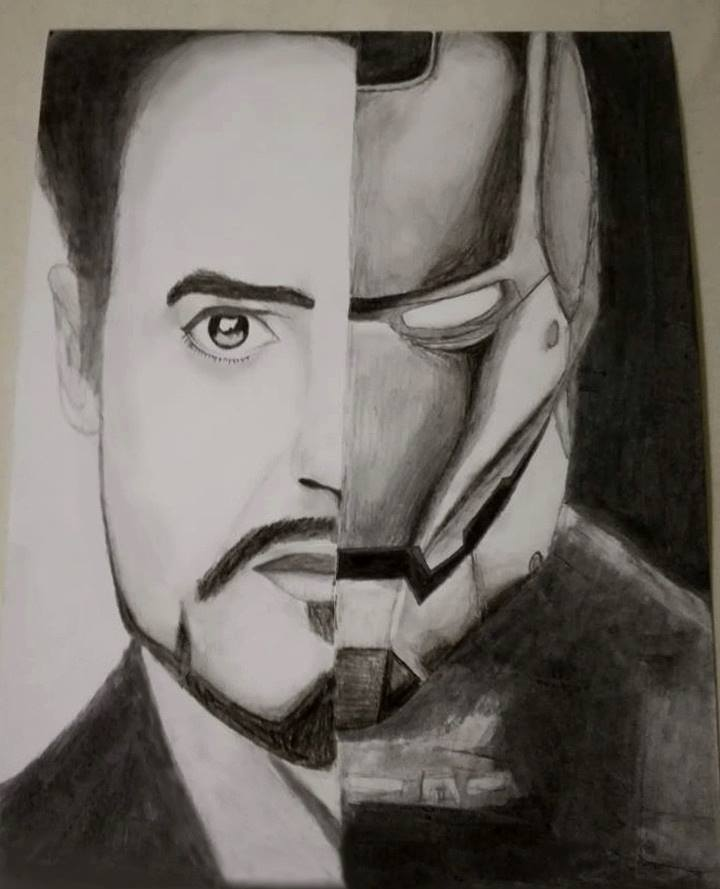
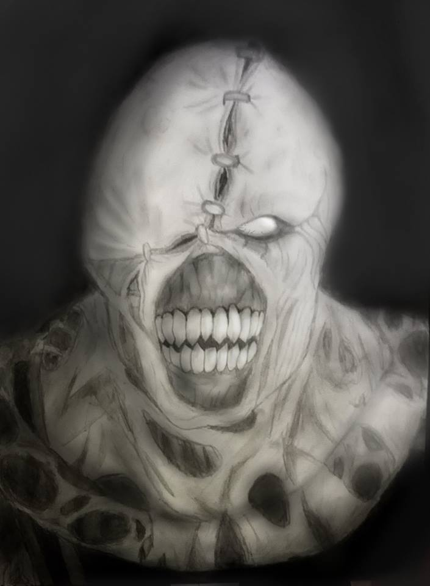
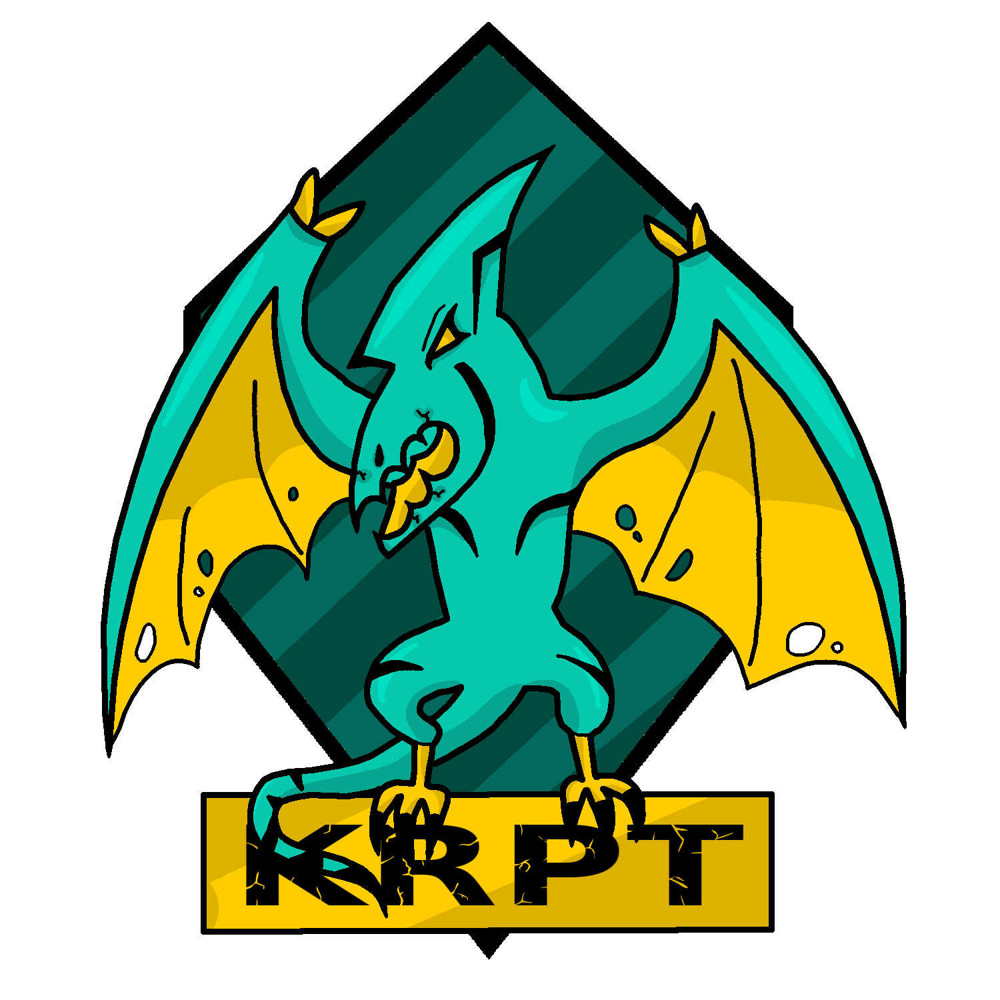
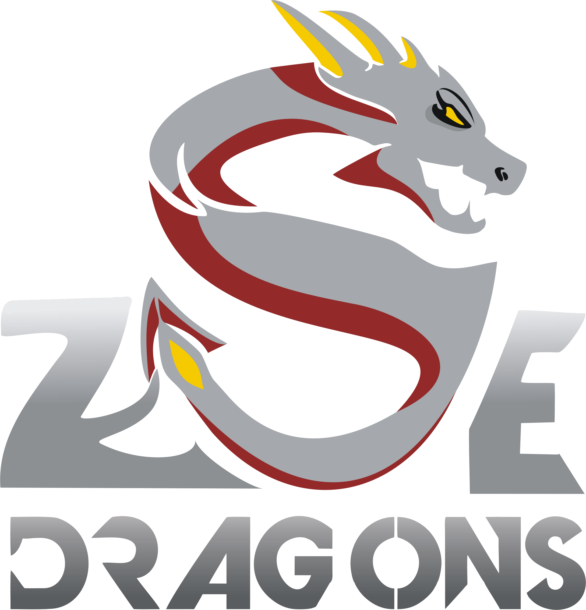

Nazywam się Jakub Kurdziel dla znajomych Guziec, mam 17 lat i jestem uczniem Zespołu Szkół Energetycznych w Krakowie. Praktycznie od dziecka interesuję się rysowaniem oraz grafiką. Ta strona jest poświęcona mojemu hobby, czyli rysowaniu oraz grafice komputerowej. Dla ciekawych zamieszczam film użytkownika Marcello Barenghi, który jest jednym z moich idolów jeśli chodzi o rysowanie.
Początki
Na początku rysowałem dla siebie, a potem zacząłem brać udział w wielu konkursach, w których przeważnie odnosiłem wysokie wyniki. Jako przykład posłużę się moimi nagrodami za 2 miejsce w konkursie rysowania węglem, 1 miejsce za szkic martwej natury oraz wyróżnienie za konkurs rysowania twarzy. Potem bardziej zagłębiłem się w grafikę komputerową próbując swoich sił w programach takich jak Gimp czy Photoshop, jednak ten pierwszy okazał się prostrzym narzędziem więc w większości oparłem się na nim.Tak doszedłem do etapu, w którym wziąłem udział w naszym szkolnym konkursie na logo drużyny e-sportowej, który wygrałem.
Poniżej umieszczam film z pierwszej rozgrywki ZSE Dragons w grze League of Legends!
Galeria







Kontakt
e-mail: jakub.kurdziel@zse.krakow.pl
tel: 123456789
adres: Kraków ul. Loretańska 16